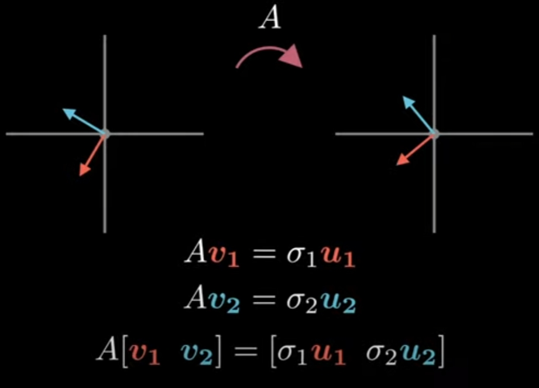
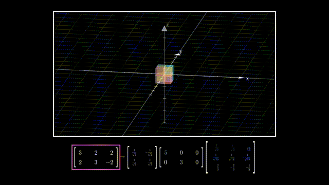
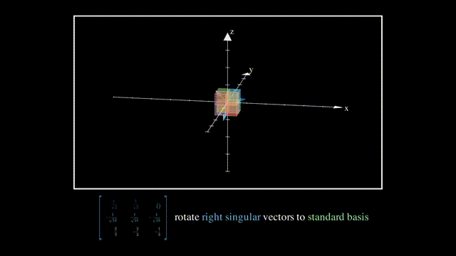
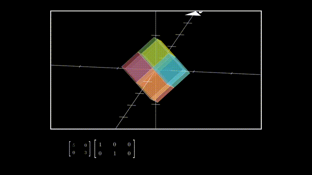
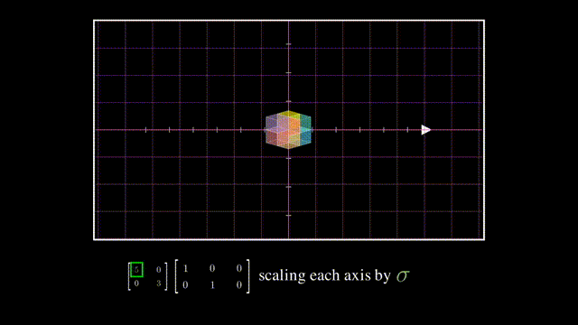
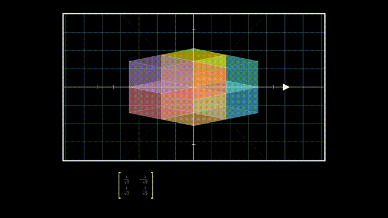
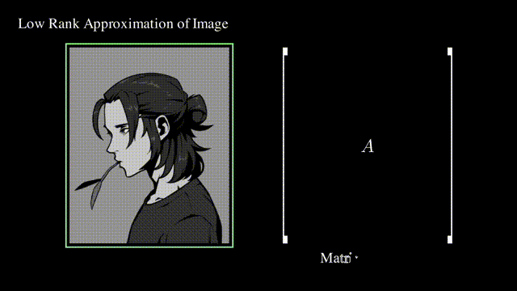

各种矩阵分解
特征值分解 Eigen Value Decomposition, EVD
前提条件：n×n方阵，且有n个线性无关的特征向量
M=VDVT
其中V是正交矩阵，D是由M的特征值构成的对角矩阵。
QR分解(正交分解)
前提条件：非奇异的实矩阵，不要求是方阵
M=QR
其中Q是正交矩阵，R是上三角矩阵。
可用于解满秩最小二乘问题。
奇异值分解 Singular Value Decomposition, SVD
将QR分解推广到任意的实矩阵
M=UΣVT
其中U和V是正交矩阵，Σ是由M的奇异值构成的对角矩阵。
不仅可以解决满秩最小二乘问题，还可用于解亏秩最小二乘问题。
LU分解 LU Decomposition
前提：所有顺序主子式都不为0
M=LU
其中L是下三角矩阵，U是上三角矩阵。
LU分解在本质上是高斯消元法的一种表达形式。实质上是将矩阵通过初等行变换变成一个上三角矩阵。
Cholesky分解 Cholesky Decomposition
前提条件：对称正定矩阵
M=LTL
其中L是上三角矩阵。
为什么要用SVD解方程
这是一个矩阵形式的线性方程：
Ax=b
高中以来求解线性方程的方法都只能在矩阵的秩R(A)=R([A∣b])的情况下有效（即A和未知数数量相等且没有任何行向量或列向量之间是线性相关的）。
但在现实线性系统中，很多都是要多次取样求平均值，A不是正定更不是方阵，方程数量不等于求解未知量数量，且测量值还有误差没有精确解，这时的求解不像是在解方程而更像是在进行线性回归。
SVD起作用的场合：
- “求解”欠定方程 underdetermined：方程数量没有未知量多，线性方程组无穷多解
- “求解”超定方程 overdetermined：方程数量比未知量多，线性方程组无解
SVD的定义
对于一个秩为r的矩阵Am×n，必存在m×m的正交矩阵Um×m，n×n的正交矩阵Vn×n，m×n的矩阵Σm×n，使得
Am×n=Um×mΣm×nVn×nT=Um×m(Dr×rOOO)m×nVn×nT(9)
其中，Dr×r=⎝⎜⎜⎜⎛λ1λ2⋱λr⎠⎟⎟⎟⎞r×r，λ1≥λ2≥...≥λr>0为ATA的r个 非零特征值 （从大到小排列）。
这里λ1,λ2,⋯,λr称为A的 正奇异值；λ1,λ2,⋯,λr,01,02,⋯,0n−r（从大到小排列）称为A的 奇异值 。
SVD如何解线性方程
假设要解这个矩阵形式的线性方程：
Ax=b
这个线性方程可能欠定也可能超定
先对A进行奇异值分解：
A=UΣVT
而正交矩阵UT=U−1、VT=V−1于是线性方程化为：
AxUΣVTxxxx=b=b=(VT)−1Σ−1U−1b=VΣ−1UTb=A+b
其中，A+=VΣ−1UT称为伪逆矩阵(pseudo inverse)。
这样求出来的x=A+b可证明存在如下性质：
- 若Ax=b是欠定方程的表示，那么x=A+b是最小正则化解：
s.t.min∥x∥Ax=b
- 若Ax=b是超定方程的表示，那么x=A+b是最小二乘解：
min∥Ax−b∥
深入：SVD几何含义，方阵的情况
对于一n维到n维的线性变换A（n行n列），求一组n个相互正交的n维单位向量vi,i∈[1,n]，使其在线性变换后仍然相互正交。
单位向量vi,i∈[1,n]在变换后不一定是单位向量，所以用一常数σi和单位向量ui,i∈[1,n]表示：

上图扩展到n行n列，用矩阵形式表示：
A[v1…vi…vn]=[σ1u1…σiui…σnun]=[u1…ui…un]⎣⎢⎢⎢⎢⎡σ10⋮00σ2⋮0⋯⋯⋱⋯00⋮σn⎦⎥⎥⎥⎥⎤
令：
VUΣ=[v1…vi…vn]=[u1…ui…un]=⎣⎢⎢⎢⎢⎡σ10⋮00σ2⋮0⋯⋯⋱⋯00⋮σn⎦⎥⎥⎥⎥⎤
于是上述方程化为：
AV=UΣ
即：
A=UΣVT
非常清晰。
深入：SVD几何含义，矩阵的情况
以行数小于列数的矩阵为例，A=UΣVT可以理解为降维变换：

V的列向量相互正交且是单位向量，所以它就是一个旋转：

Σ可以分成一个对角方阵和单位对角矩阵，其中单位对角矩阵相当于一个维度删除操作：

而对角方阵则是在降维后在各坐标轴上的拉伸：

最后U的列向量相互正交且是单位向量，所以也是一个旋转：

深入：SVD的求解
首先：
- 由于vi和ui都是相互正交的单位向量，所以有V−1=VT,VVT=1和U−1=UT,UUT=1
- 由于Σ是对角矩阵，所以有ΣΣT=ΣTΣ=Σ2
于是：
AATATA=UΣVTVΣTUT=VΣTUTUΣVT=UΣΣTUT=VΣTΣVT=UΣ2UT=VΣ2VT
所以，要求解U、V、Σ，对AAT和ATA做特征分解（Eigendecomposition，又称谱分解 Spectral decomposition）即可。
根据矩阵特征值的性质可知，AAT和ATA特征值必相同，Σ2就是其特征值组成的对角矩阵，而U和V分别是AAT和ATA的特征矩阵。
深入：SVD怎么解最优化问题
可用SVD解的方程最直观的表示为“求使Ax最大（或同理可求最小）的单位向量x”：
s.t.xmax∥Ax∥2∥x∥=1
换个形式：
s.t.xmaxxTATAx∥x∥=1
根据特征值的定义，ATA的特征值λ要满足ATAx=λx：
ATAxxTATAxxTATAx=λx=λxTx=λ
所以xTATAx的值必然是ATA的特征值中的一个。
于是，xTATAx的最大值取ATA的特征值中的最大值即可，最大特征值对应的特征向量就是x的最优解。
而SVD中的V是ATA的特征矩阵、Σ2是ATA的特征值组成的对角矩阵，所以直接去Σ2中找到最大值（或最小值）即最优值λ，其在V中对应的列就是最优解x。
深入：SVD存在性证明
没必要，看下几何含义啥都懂了，数学证明还是算了吧
深入：SVD和主成分分析
